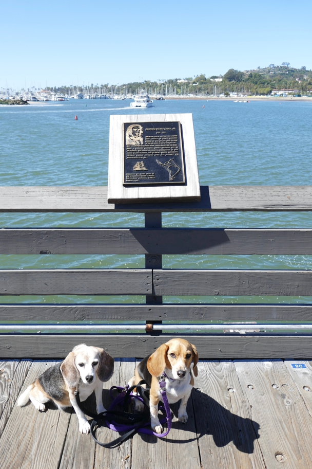

<--Previous Up Next-->

It commemorates the arrival in Santa Barbara of Richard Henry Dana, Jr., author of "Two Years Before the Mast" (which I recommend to anyone interested in sea stories or early California).
California Halley Beagle Santa Barbara Wallace Beagle